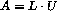
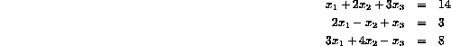
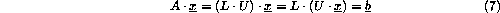
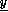
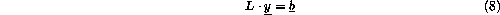
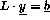
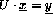
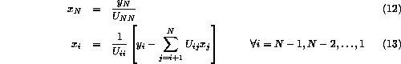

Matrices are used widely in Numerical Computing, many alogirithms inolve decomposing a matrix, A into an equivalent pair L and U, where L and U are lower and upper triangular matrices respectively and  .
Consider the following system of equations,

here
so
and

Both L and U can be stored in the same matrix; since the diagonal of L is always unity it does not have to be store, the combined LU matrix can be stored as

Now, given that

then we solve for  where

(recall that the diagonal of L will be all 1s) and then solve
The advantage of this method is that the triangular system of equations is very easy to slove.  can be sloved by forward substitution and  by backward substitution. is calculated by forward substitution as follows :
Once is known can easily be obtained by backwards substitution:

The LU decomposition algorithm is as follows:
For each row k from 1 to n-1 in order,
A(k,k) are divided by the diagonal element.A(i,j)
in the submatrix of A below and to the right of the diagonal
element A(k,k), ie, A(k+1:n,k+1:n) is modified by
subtracting A(i,k)*A(k,j)
The algorithm will not work if the A matrix is singular, that is,
if any of the rows of A are all zero.
This algorithm omits the issue of pivoting so can be unstable - your program will work for the 3 by 3 matrix givenm here.
The an HPF program with subroutines to perform LU decomposition and foward and backwards substitution.